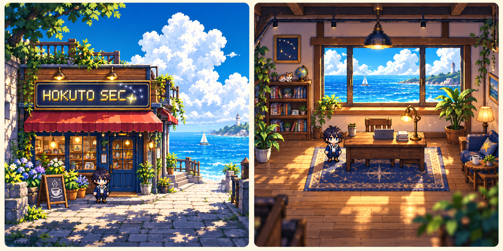
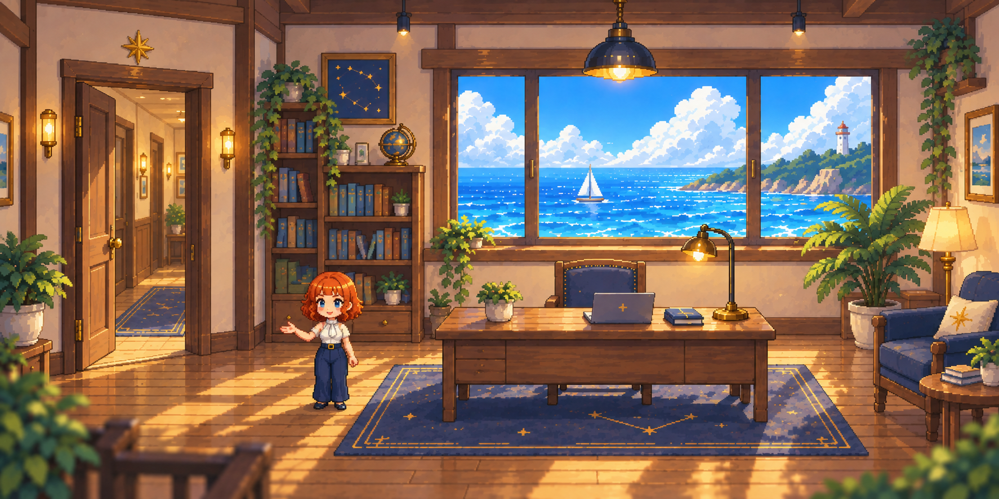

① 무슨 일이 있었나
시장·뉴스에서 달라진 사실을 한두 문장으로 설명합니다.
따뜻한 공간과 한 명의 안내원이 복잡한 북두의 정보를 쉽게 풀어주는 웹페이지. 처음에는 호기심으로 들어오고, 다음 날에는 새로운 이야기를 확인하러 돌아옵니다.
기획 초안 v2 · 시각 방향 채택 / 상세 기능 제안

화풍: 귀여운 픽셀 캐릭터 + 빛과 깊이감이 있는 HD-2D풍. 로고는 기존 HOKUTO SEC. SVG를 사용합니다.
풍경은 입구, 안내원은 해설, 각 방은 실제 업무. 세 역할을 나누면 예쁜 그림을 감상하다 끝나지 않고 필요한 투자 정보로 자연스럽게 이어집니다.
바닷가 입구 → 여성 안내원의 오늘 브리핑 → 왼쪽 문에서 방 선택 → 상세 내용 → 라운지로 돌아오기
첫 화면의 주 버튼은 「오늘의 북두 만나기」. 재방문자는 「바로 둘러보기」로 원하는 방을 즉시 엽니다. 캐릭터를 직접 걸어서 조종할 필요는 없습니다. 문·버튼을 클릭하거나 터치하면 이동하는 웹페이지입니다.
북두의 호스트이자 오늘의 편집장. 말투는 친근하고 간결하게, 위험과 불확실성은 분명하게 표현합니다. 처음 방문한 사람에게는 사용법을 한 번만 소개하고, 평소에는 실제 자료에서 중요한 변화를 최대 3개 골라 이야기합니다. 이름과 음성은 추후 결정합니다.
시장·뉴스에서 달라진 사실을 한두 문장으로 설명합니다.
보유종목이나 관심 후보와의 관련성, 긍정·부정 근거를 구분합니다.
지금 확인할 것과 기다릴 것을 설명하고 해당 방으로 연결합니다.
“오늘은 보유종목에 새 소식 하나가 있어요. 후보 종목은 아직 매수 신호를 기다리는 중이에요. 먼저 어떤 이야기를 볼까요?”
「내 주식 소식」 「후보 살펴보기」 「전체 방 보기」각 이야기에는 짧은 요약 → 이유 → 근거 보기를 둡니다. 중요한 위험이나 자료 누락은 첫 화면에서도 보이게 합니다. 새로운 변화가 없으면 “새로 확인된 중요한 변화가 없어요”라고 말합니다.
문을 누르면 방 이름과 오늘의 상태가 있는 선택 화면이 열립니다. 처음부터 긴 복도를 걸어갈 필요 없이 목록에서 원하는 방을 바로 선택합니다. 처음부터 모든 방을 큰 그림으로 만들지 않고, 같은 읽기 편한 상세 화면 틀에 방별 분위기와 소품을 더합니다. 아래 이름은 표시명 제안이며 기존 기능은 유지합니다.
| 방 / 기존 연결 | 안내원의 첫 설명 | 안에서 보는 내용과 다음 행동 |
|---|---|---|
| 오늘의 소식 뉴스룸 | “오늘 바뀐 소식부터 볼까요?” | 중요 기사·관련 종목·긍정/부정/미확인 → 원문과 관련 종목 보기. |
| 발견의 서재 리서치센터 | “어디에 관심과 자금이 모였을까요?” | 테마·돈몰림·발견 이유 → 해당 테마와 후보 살펴보기. |
| 후보 살롱 펀드매니저실·종목검증실 | “이 후보가 올라온 이유를 비교해봐요.” | 통과 조건·실적·대표 여부·약점 → 후보 비교와 결정실 이동. |
| 판단의 책상 사장실·결정실 | “기대할 근거와 걸리는 점은 무엇일까요?” | 매수대상·보류·제외, 근거와 반대 근거 → 다음 확인 조건 보기. |
| 신호 관측실 BNF 신호실 | “기다리던 조건이 나타났을까요?” | 기존 신호·발생일·미충족 조건 → 해당 종목 상세 보기. |
| 내 투자 데스크 트레이딩룸 | “내 주식과 새로 볼 주식을 나눠 볼게요.” | 보유주식 관리·신규매수의 두 입구. 보유 변화·진입 조건·가격 기준 시각 → 근거와 차트 보기. |
| 돌아보기 서가 성과기록·선정성적 | “그때의 판단은 이후 어떻게 됐을까요?” | 당시 판단·후속 결과·평가 대기와 제외 사유 → 원래 기록 확인. 기존 두 기능은 구분 유지. |
모든 방은 「한눈에 요약 → 이유와 근거 → 필요한 상세 기능」 순서. 긴 설명을 강제로 듣지 않아도 기존 버튼에 접근할 수 있어야 합니다.
수익률 경쟁·매매 횟수 보상·출석 압박은 넣지 않습니다. 이해하고 발견하는 경험을 재미있게 만듭니다.
풍경을 넓게 보여주고 안내원 옆에 읽기 패널을 둡니다. 왼쪽 문과 전체 메뉴를 항상 찾을 수 있게 합니다.
배경·안내원 아래로 설명을 배치합니다. 문이 화면 밖으로 잘려도 「방 둘러보기」 버튼으로 이동합니다. 글자를 축소해 끼워 넣지 않습니다.
한글·숫자는 읽기 쉬운 글꼴. 뒤로 가기·방 주소 직접 열기·입장 건너뛰기·키보드 조작 지원. 음성은 나중에 선택 기능으로 추가합니다.
배경, 캐릭터, 설명 글, 버튼을 분리합니다. 작은 캐릭터를 정확히 눌러야만 진행되지 않도록 별도의 큰 브리핑 버튼을 제공합니다. 배경의 부드러움과 관계없이 글자·숫자는 선명하게 유지합니다. 현재 시안은 인물이 포함된 참고 그림이므로 실제 제작 때 배경과 캐릭터를 별도 자산으로 준비합니다. 설명 패널이 창문·문·안내원을 가리지 않는지 먼저 확인한 뒤 실내를 수정합니다.
첫 구현 범위: 예시 브리핑 3개 + 뉴스 방 1개. 실제 투자 데이터 연결과 운영 배포는 다음 단계.
기존 북두 자료가 갱신되면 같은 기준 시각의 결과에서 사실 → 중요성 → 다음 확인 → 출처를 정리해 브리핑을 준비합니다. 방문할 때마다 모든 방을 새로 분석하지 않고 준비된 설명을 보여줍니다.
시제품에서는 가상 예시만 사용합니다. 운영 연결 단계에서는 기존 판정과 수치가 요약 과정에서 바뀌지 않는지 확인합니다. 방과 라운지의 자료 시각이 다르면 각각 표시하고, 확인되지 않은 인과관계나 고객 관계는 설명에 넣지 않습니다. 이 구조가 실제 구현됐다는 뜻은 아닙니다.
변경 전 원본: 여성 안내원 실내 v1 · 외관 원본 비교 시안. 외관은 여전히 이전 남성 캐릭터가 포함된 참고본입니다.
안내원은 기존 분석을 설명하며 투자 규칙을 새로 만들지 않습니다. 사실·추정·미확인을 구분하고 기준 시각을 표시합니다. 요약 생성 실패 때 이전 내용을 오늘 것처럼 보여주지 않습니다. 첫 시제품은 가상 자료만 사용하고, 실제 개인 보유·계좌 자료는 공개 학원 저장소에 저장하지 않습니다.
이번 채택은 그림의 방향과 웹 경험 기획입니다. 기존 프로그램 변경·자동매매·모델 활성화·운영 배포 승인을 포함하지 않습니다. 기존 학원 기획서의 ‘사장실 하나부터’는 이번 새 흐름에서 ‘입구·라운지·상세 방 하나부터’로 갱신합니다.